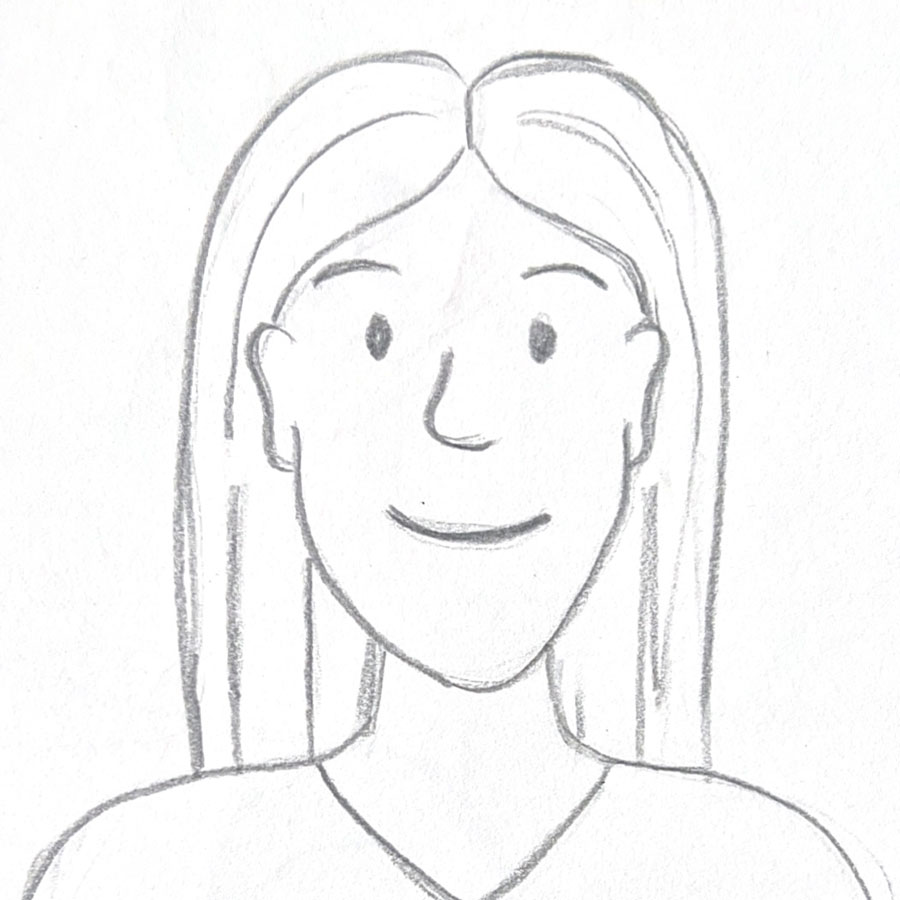
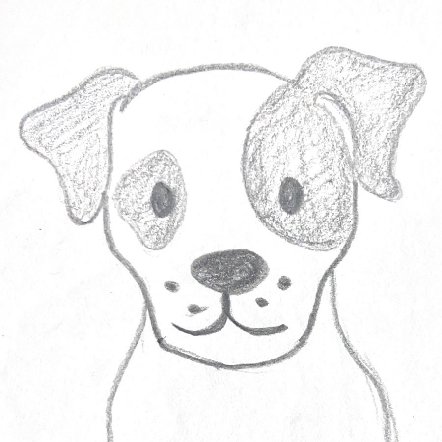

Das Team hinter den Touren
Heidelberg ist mehr als nur ein schöner Ort – es ist eine Erfahrung.Genau das möchten wir mit unseren Touren weitergeben. Ob zu Fuß, per Kanu oder mit einem Glas Wein in der Hand – unser kleines, engagiertes Team sorgt dafür, dass jede Tour persönlich, lebendig und unvergesslich wird.
Sabine Deutz – Inhaberin & Stadtführerin
Alter: 43Hintergrund: Studium der Kunstgeschichte & Germanistik
Interessen: Regionalgeschichte, Naturpädagogik, Altstadtkultur
Touren: Altstadtführung, Geschichte, Kinder- und Familienprogramm
Sabine ist die Gründerin des Unternehmens. Seit über 10 Jahren vermittelt sie Geschichte mit Begeisterung und Tiefe – und das stets mit einem offenen Ohr für die Wünsche ihrer Gäste.
Nico Münster – Sportlicher Guide & Outdoor-Profi
Alter: 29Hintergrund: Sportwissenschaftler, Laufcoach
Interessen: Trailrunning, Bewegung in der Natur
Touren: Lauftreff, Aktive Stadtführungen
Nico bringt Tempo und Leichtigkeit in jede Tour – ideal für alle, die Bewegung mit neuen Perspektiven verbinden wollen.

Hintergrund: M.A. Geschichte
Interessen: Architekturgeschichte, europäische Residenzen
Touren: Altstadt & Schlossführung
Mit fundiertem Wissen und einem Blick fürs Detail bringt Julia historische Zusammenhänge lebendig auf den Punkt.
Julia Hirsch – Historikerin & Schloss-Expertin
Alter: 36Hintergrund: M.A. Geschichte
Interessen: Architekturgeschichte, europäische Residenzen
Touren: Altstadt & Schlossführung
Mit fundiertem Wissen und einem Blick fürs Detail bringt Julia historische Zusammenhänge lebendig auf den Punkt.

Hintergrund: Jack Russell Terrier
Interessen: Leckerlies, Stöcke, Eichhörnchen
Touren: Alles, was in der Natur ist!
Mirabelle (kurz: Belle) ist bei unseren Touren in der Natur immer dabei und hat viel Freude dabei, immer von vielen Menschen umgeben zu sein.
Mirabelle – unsere treue Wegbegleiterin
Alter: 12Hintergrund: Jack Russell Terrier
Interessen: Leckerlies, Stöcke, Eichhörnchen
Touren: Alles, was in der Natur ist!
Mirabelle (kurz: Belle) ist bei unseren Touren in der Natur immer dabei und hat viel Freude dabei, immer von vielen Menschen umgeben zu sein.
Was uns verbindet:
Uns alle eint die Leidenschaft für Heidelberg – in seiner Vielfalt, Tiefe und Lebendigkeit. Wir arbeiten im kleinen Team, persönlich und professionell, und freuen uns, Sie auf Ihrer Entdeckungstour zu begleiten.